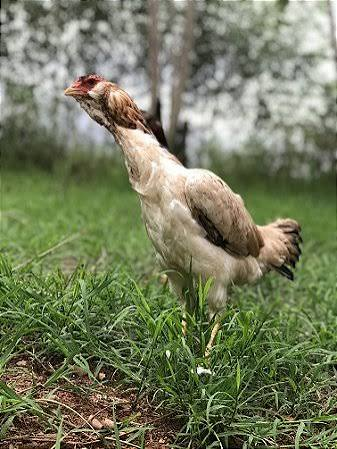

A galinha é uma ave muito comum em sítios e cooperativas rurais, como a nossa.Ela é criada solta, se alimenta de milho e restos de comida, e é conhecida por dar ovos de casca mais forte.
Além dos ovos, a galinha caipira também é criada para o corte, sendo parte importante da econimia de pequenos produtores.